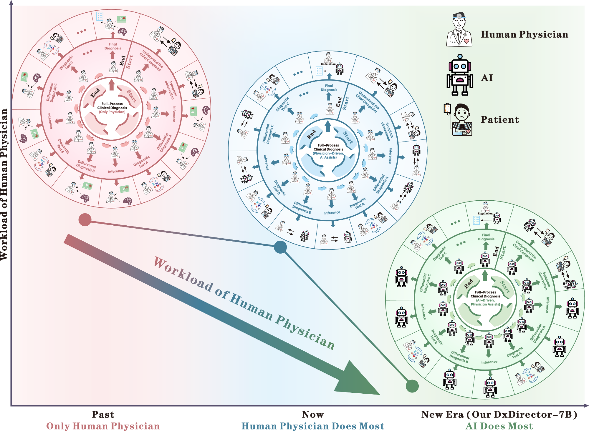
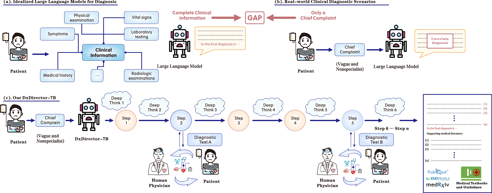
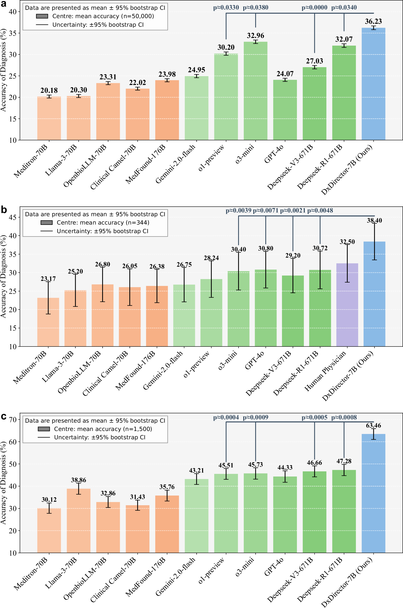
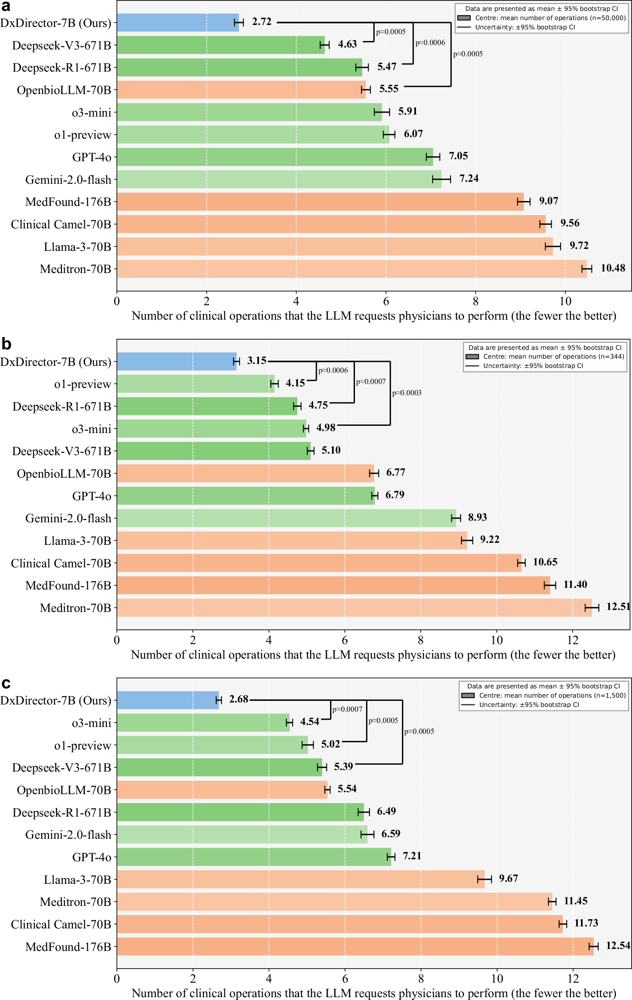
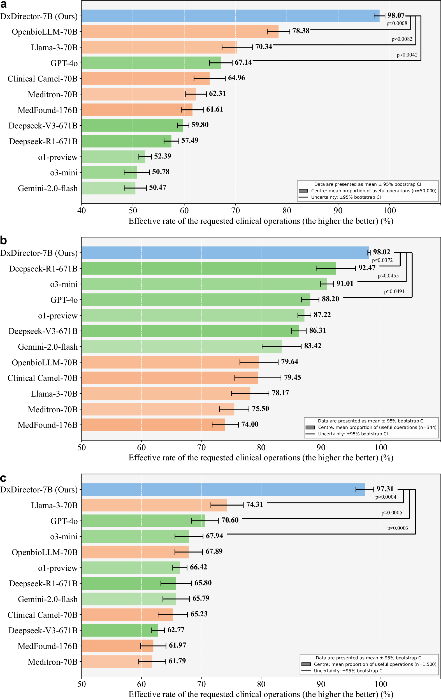
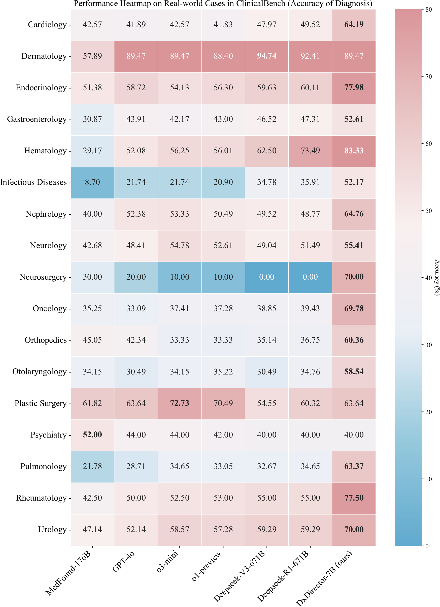
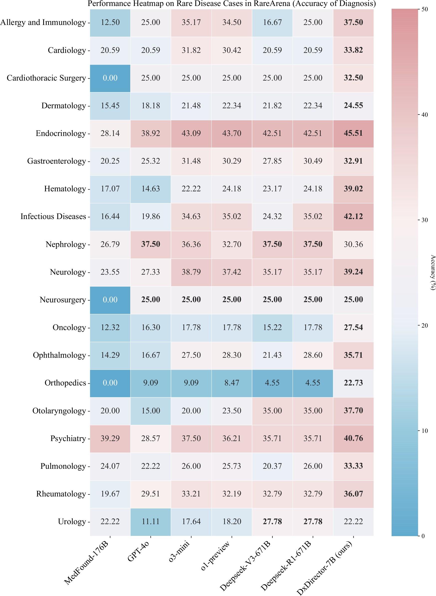
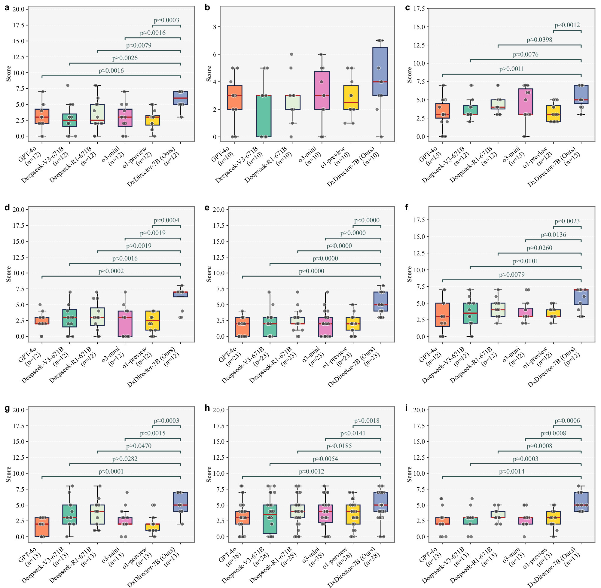
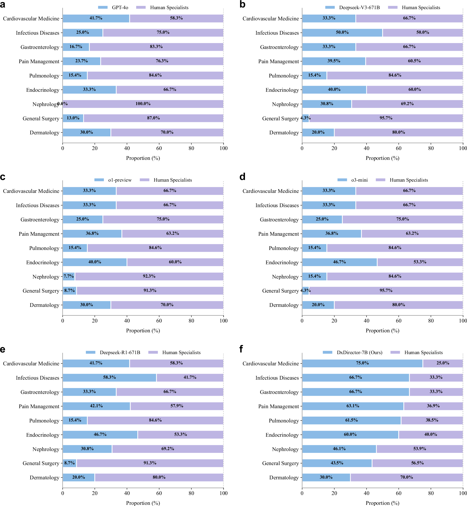
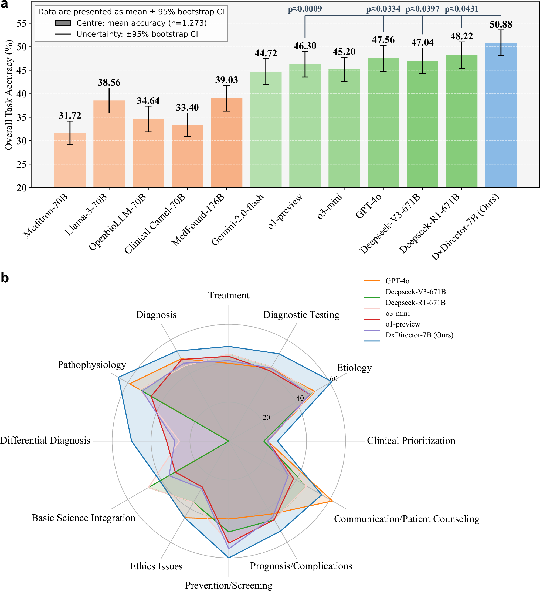

全文精读
DxDirector：驱动全流程临床诊断的智能体大语言模型
DxDirector: an agentic large language model driving the full-process clinical diagnosis
解读更新 2026-11-15 23:33 · 依据论文全文整理
全文精读已完成，文章版正在逐步升级。现有内容可继续阅读。
论文将医学大模型从回答既定问题的助手，转为从模糊主诉出发、主动规划检查与推理的诊断协调者。DxDirector-7B通过医学预训练、分步指令训练和策略偏好优化，同时追求诊断正确与减少医生介入，并结合文献检索、高危升级和步骤追溯。公开数据集结果显示其准确率与操作请求效率具有优势，但真实病例主要在代理复现场景中评估。解读：值得借鉴的是成本约束下的序贯决策方法，而非将代理判定的替代比例理解为临床替代证明。
研究问题
真实诊断从模糊主诉开始，需要不断选择检查、补充信息并修正判断，而完整病例输入的问答评测省略了这一过程。作者研究模型能否主动驱动诊断，只在必要操作时请求医生帮助，并保留医生最终决定权。解读：核心问题是信息不完备下的序贯决策，而非单次疾病分类。
方法与路线
模型先进行医学继续预训练，再利用10,178条合成指令数据学习分步诊断。训练以损失掩码交替监督思考问题与知识回答；随后每步采样三个候选，按最终正确性和医生请求次数赋奖，用DPO优化思考偏好。系统另接段落检索与高危监督代理，支持证据引用和人工接管。
创新与比较
解读：主要方法贡献是把每步待解决的问题定义为策略，将诊断结果与人工介入成本共同用于偏好排序，而非仅训练最终答案。推理和知识调用的分离监督、步骤编号及责任来源标记共同形成可审计流程；不能据此声称DPO、检索或慢思考本身是本文首创。
证据与发现
图3报告模型在RareArena、NEJM和ClinicalBench的准确率分别为36.23%、38.40%、63.46%；图4对应操作请求数为2.72、3.15、2.68。USMLE总体准确率为50.88%。作者据此认为小模型可兼顾准确性与介入效率；这些操作次数并非直接测得的医生工时。
局限与边界
单院代理评估限制泛化。缺准确率、式(4)缺零请求规则，影响完整性及奖励边界；索引有误。基线名、样本量、增幅、评分轴、样本数及参数比例、统计口径不一，影响比较复现；均未补造。 原文核对： NEJM分析第(3)点原页写作“DxDirector-7B achieves accuracy—a 5.9% absolute improvement”，accuracy之后缺少具体准确率数值。该数值在同页前文及P6图3b另有明确报告38.4%，但不能据此补写该处原文。缺项影响该句完整性，不影响其他现有结果的识读。； Baselines段原页列出“Meditron-176B”，但同页结果段及P6图3均标作“MedFound-176B”。原文模型名称不一致，影响176B基线身份的明确对应；不能当作文字提取错误直接统一名称。； 图3a图例原页明确标注“Centre: mean accuracy (n=50,000)”，而P4及P5称RareArena实际评估采用22,901例。原文件存在样本量口径不一致，未说明50,000是否另有所指；影响图3a准确率与置信区间对应样本规模的解释，不能自行改为22,901。； 图4a原页图例标注“n=50,000”，但本批P8明确RareArena分析基于22,901例，前批数据集说明也为22,901例。原文未解释口径差异，影响RareArena操作次数及置信区间对应样本规模的判断；不自行更改图例。； ClinicalBench科室分析原页报告肿瘤科提升“Δ = 30.93%”；但P10图6肿瘤科DxDirector为69.78%，最高所示基线为39.43%，两者相差30.35个百分点。正文与图中数值不一致，影响该科室优势幅度；无法据本批判定哪一处应修订。； 图5a原页图例标注“n=50,000”，与P8所述RareArena的22,901例不一致，未说明是否采用不同样本范围。影响有效操作比例及其置信区间的样本口径解释，不影响现有柱值识读。； 图8图注明确评分范围为0—10，但原页多个子图纵轴扩展至17.5或20，皮肤科子图则采用不同范围。属于原图评分范围与坐标展示不统一，并非提取错误；不能据轴上限理解为实际评分超过10，跨科室箱体高度也不宜直接比较。； 图8c内分泌科横轴原页标注GPT-4o、o3-mini、DxDirector各n=15，而Deepseek-V3、Deepseek-R1、o1-preview各n=12。图注称n为独立临床病例数，但本批未交代不同模型缺少3例的原因及处理方式，影响同病例比较和显著性结果的解释；不能自行补齐样本。； USMLE正文称参数规模“approximately one-tenth”，同时列出7B对70B及176B。7/70为10%，7/176约为3.98%，不能将对MedFound-176B的比例也统一表述为约十分之一。影响参数效率表述，不影响图10a的准确率数值。； 式(1)原页在对t=1至n求和时，概率目标写作c_i，条件前缀却为c_1,…,c_{t−1}；与前页定义的预测目标c_t不一致。影响逐词元损失的严格索引解释，不能未经说明将原式c_i直接改为c_t。； 数据构建段首次列举步骤1至t−1的历史时，原页写作(d₁,q₁,a₁)、(d₁,q₂,a₂)、…、(d_t,q_{t−1},a_{t−1})，思考项下标与步骤不一致；同页后文X_t则使用(d₂,q₂,a₂)及(d_{t−1},q_{t−1},a_{t−1})。影响历史输入的严格记号解释，不影响其逐步采样流程的识读。； 式(4)正确答案奖励为10/γ，正文仅定义γ为请求医生协助次数，本页未规定γ=0时的奖励或保证γ≥1。若允许零次请求，将出现除零未定义；影响该边界情况下奖励与偏好对的构建，不能自行添加平滑项或默认次数。； 基线第4项原页写“Meditron-176B”，而前批结果图及正文使用“MedFound-176B”。该命名不一致在原页确实存在，影响176B基线身份对应；不应作为提取错误直接统一名称。； Statistical information统一写bootstrap为1000次、准确率比较top-3基线，但前批图3—5图注明确NEJM使用200次重采样，图10图注则比较top-4基线。原文方法总述未注明这些例外，影响统计流程的复现口径；不能自行统一为同一设置。
方向关联
解读：与智能运维的联系是从异常描述出发，主动选择日志查询、检测或专家升级，并用结果正确性与人工成本共同评价策略；与可靠性研究的联系是风险门控和审计链。论文没有结构设计实验，也未验证设备故障诊断迁移，不能将医学指标直接当作工程收益。
后续研究建议
建议先复现偏好数据构建，明确零请求、同奖励和错误答案的处理，再检验合成思考是否泄露未来信息。迁移运维时，应分别测量故障定位准确率、实际工时、漏升级率与恢复代价，并加入独立专家盲评及跨场景测试；这些均为研究建议，不是作者已完成的实验。
阅读建议
建议作为人机协同决策与低成本检查规划的方法型论文重点阅读，优先研究步骤级偏好优化及风险升级；不宜作为已验证临床替代能力的证据。
原图未改动。以下图注来自标注的来源，不据此补写摘要未报告的实验结论。
已取得的论文原图


原文图注与出处
The inner circle represents the driver (deciding the specific clinical problems) of multi-step dynamic clinical diagnosis, and the outer circle represents the specific execution of the corresponding steps (solving the clinical problems). In the past, all work is done by human physicians. Now, artificial intelligence (AI), especially large language model (LLM), has reduced physicians' workload to a certain extent, but AI can only serve as a tool to answer questions designed by physicians at specific steps, and lacks the ability to drive the full diagnosis process starting from the chief complaint, which still relies heavily on physicians. DxDirector-7B, marks an era that AI can drive the full-process diagnosis, only needs physicians at necessary steps, reducing the workload of physicians as much as possible.
Xu, Shicheng et al.
原文图页 · CC BY 4.0

原文图注与出处
a Existing LLMs are still limited to answering questions with complete clinical information. b However, real-world clinical diagnosis only begins with the patient’s vague and nonspecialist chief complaint. This gap means that much more work in collecting complete clinical information still highly relies on human physicians. c DxDirector-7B addresses this by driving the full-process clinical diagnosis step-by-step, only requesting assistance from physicians at necessary steps with the principle of minimizing physicians' involvement.
Xu, Shicheng et al.
原文图页 · CC BY 4.0

原文图注与出处
a Results on dataset with Rare Disease Cases (RareArena). b Results on dataset with Complex Cases (New England Journal of Medicine Clinicopathologic Cases). c Results on dataset with Real-world Cases (ClinicalBench). Bars are annotated with the accuracy of each LLM. Error bars reflect 95% confidence intervals determined by non-parametric bootstrap procedure with 1000 samples on RareArena and ClinicalBench, and 200 samples on New England Journal of Medicine (NEJM) Cases. We perform statistical significance tests utilizing the two-side McNemar test between DxDirector-7B and the top-3 baselines on each dataset, with p value levels annotated on the bars. Source data are available in the Source Data file (Figure-3-a.xlsx, Figure-3-b.xlsx, Figure-3-c.xlsx).
Xu, Shicheng et al.
原文图页 · CC BY 4.0

原文图注与出处
a Results on dataset with Rare Disease Cases (RareArena). b Results on dataset with Complex Cases (New England Journal of Medicine Clinicopathologic Cases). c Results on dataset with Real-world Cases (ClinicalBench). Error bars reflect 95% confidence intervals determined by non-parametric bootstrap procedure with 1000 samples on RareArena and ClinicalBench, and 200 samples on NEJM Cases. We perform statistical significance tests utilizing two-side Mann-Whitney U test between DxDirector-7B and the top-3 baselines, with p value levels annotated on the bars. Source data are available in the Source Data file (Figure-4-a.xlsx, Figure-4-b.xlsx, Figure-4-c.xlsx).
Xu, Shicheng et al.
原文图页 · CC BY 4.0已取得的论文原图


原文图注与出处
a Results on dataset with Rare Disease Cases (RareArena). b Results on dataset with Complex Cases (New England Journal of Medicine Clinicopathologic Cases). c Results on dataset with Real-world Cases (ClinicalBench). Error bars reflect 95% confidence intervals determined by non-parametric bootstrap procedure with 1000 samples on RareArena and ClinicalBench, and 200 samples on NEJM Cases. We perform statistical significance tests utilizing Mann-Whitney U test between DxDirector-7B and the top-3 baselines, with p value levels annotated on the bars. Source data are available in the Source Data file (Figure-5-a.xlsx, Figure-5-b.xlsx, Figure-5-c.xlsx).
Xu, Shicheng et al.
原文图页 · CC BY 4.0

原文图注与出处
This figure shows the results of DxDirector-7B vs. state-of-the-art medically adapted and commercial general-purpose large language models (LLMs) across 17 clinical departments consisting of 1500 samples in ClinicalBench that is collected from real world. Source data are available in the Source Data file (Figure-6.xlsx).
Xu, Shicheng et al.
原文图页 · CC BY 4.0

原文图注与出处
This figure shows the results of DxDirector-7B vs. state-of-the-art medically adapted and commercial general-purpose large language models (LLMs) across 19 clinical departments in rare disease cases on 22,901 samples in RareArena. Source data are available in the Source Data file (Figure-7.xlsx).
Xu, Shicheng et al.
原文图页 · CC BY 4.0

原文图注与出处
a Cardiovascular Medicine. b Dermatology. c Endocrinology. d Gastroenterology. e General Surgery. f Infectious Diseases. g Nephrology. h Pain Management. i Pulmonology. The evaluation is conducted by double-blinded adjudication between LLMs and specialists in the corresponding departments, with scores ranging from 0 to 10. The sample size ( n ) for each model represents the number of independent clinical cases evaluated and is indicated on the x-axis. Each data point represents a distinct clinical scenario (biological replicate); no technical replicates were pooled. Box plots illustrate the distribution of scores for each model. Box Plot Definitions: The central red line represents the median (50th percentile). The lower and upper boundaries of the box indicate the 25th and 75th percentiles, respectively (defining the Interquartile Range, IQR). The whiskers extend to the minimum and maximum values that fall within 1.5 × IQR from the box edges. Data points outside this range are plotted individually as outliers. We perform statistical significance tests utilizing the two-side Mann-Whitney U test between DxDirector-7B and the baselines, with p value levels annotated on the figures. Source data are available in the Source Data file (Figure-8.xlsx).
Xu, Shicheng et al.
原文图页 · CC BY 4.0已取得的论文原图


原文图注与出处
a GPT-4o vs. Specialists. b Deepseek-V3-671B vs. Specialists. c o1-preview vs. Specialists. d o3-mini vs. Specialists. e Deepseek-R1-671B vs. Specialists. f DxDirector-7B (Ours) vs. Specialists. The assessment is conducted by double-blinded adjudication between LLMs and specialists in the corresponding department. Source data are available in the Source Data file (Figure-9.xlsx).
Xu, Shicheng et al.
原文图页 · CC BY 4.0

原文图注与出处
a Accuracy of answering questions about various clinical tasks on US Medical License Exam (USMLE) in full-process diagnosis setting. Bars are annotated with the accuracy of each LLM. Error bars reflect 95% confidence intervals determined by non-parametric bootstrap procedure with 1,000 samples. We perform statistical significance tests utilizing the two-side McNemar test between DxDirector-7B and the top-4 baseline, with p value levels annotated on the bars. b The visual comparison among various large language models (LLMs) on 12 clinical tasks in USMLE. Source data are available in the Source Data file (Figure-10-a.xlsx, Figure-10-b.xlsx).
Xu, Shicheng et al.
原文图页 · CC BY 4.0查看公开摘要
Clinical diagnosis in the real world often begins with ambiguous patient complaints that require iterative reasoning and testing. While large language models (LLMs) increasingly assist with specific medical queries, they currently lack the ability to autonomously drive this entire diagnostic workflow, limiting their potential to significantly alleviate physician workload. Here we present DxDirector-7B, an agentic LLM designed to navigate the full diagnostic process through advanced slow thinking capabilities. Unlike existing assistants, our model autonomously determines optimal diagnostic strategies, requesting physician intervention only for necessary clinical operations. In evaluations spanning rare diseases and complex real-world cases, DxDirector-7B achieves superior diagnostic accuracy compared to state-of-the-art medical and general-purpose LLMs with significantly larger parameters. Crucially, it drastically reduces physician involvement while maintaining a robust safety and accountability framework for high-risk conditions. These results demonstrate a paradigm shift where AI effectively leads clinical reasoning, offering a scalable solution to enhance diagnostic efficiency and accessibility.